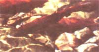
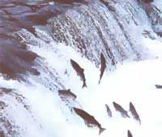
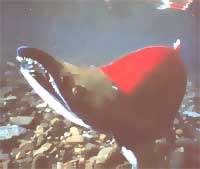
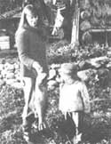
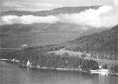
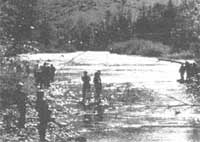

SHUSWAP DIARY
The Adams River Run: A trip of a lifetime for Sockeye Salmon.
-Deaiina Kawatski
Throughout my wandering years Shuswap Lake was the geographical center around which my life orbited. With stunning regularity I heard it call and with a deep yearning I returned to touch down in the place where I had been born. I returned home.
In 1974, dressed in a massive muskrat coat, high red boots, and a brimmed hat pinned up at the front with a serpent brooch, I flew home from Paris. I was 22 years old. I came home with the smell of roasted chestnuts and Vincent Van Gogh's self-portrait still lingering in my mind. I came home with a treasure chest of stories and an empty purse. I intended to refill it once I got a job planting trees.
On their way upstream, spawning male salmon experience a
color change to an aggressive scarlet and develop
a territory-defending hook on their mouths.
Seeking solitude, I retreated to the beach where I breathed in deeply the rich and healing air. Sitting on a rock, I nestled up to the waves and let the swirl of water wash my mind and restore my peace. This was the same shore where as a toddler I had tripped, tasted rocks, and experienced the ecstasy of the blue and green embrace of the natural world.
Sitting still, I listened to the snow melt. Yet how well I knew the perils of lingering too long. If spring began to sway forth, as hypnotic as the flute to a cobra, I knew that I would get stuck at Shuswap Lake. I wouldn't be able to move again. But I was still infatuated with the faraway and possessed by a restlessness that, if harnessed, could have moved mountains. But once I set foot on the shore of Shuswap Lake, I felt myself melt into the land. I had been deprived of this place for much of my childhood. After my father died, my mother had found work in a nearby city and we moved. My sister and brother had also suffered a lifelong denial of their birthright-to live and grow beneath the Shuswap sun and moon. We could only experience it in brief and dazzling summer displays.
Neither brother nor sister fought the urge to settle here. They each took a token trip abroad, then promptly returned and began to build homes and raise families.
Our community recently celebrated a slightly more significant homecoming-one which has been recurring for thousands of years-ever since the glaciers of the Ice Age carved out the land as we now know it. North Shuswap's Adams River is home to the world's largest return of sockeye salmon to a single river. As many as 300,000 people from dozens of countries come each season to witness this ritual of return, which peaks every four years.
On October 17, I caught a ride 18 miles to the Adams River run. I had chosen what I thought would be a quiet Monday. Emerging from my friend's car, I stood baffled by what is normally a near-empty parking lot. Every inch of the lot was crammed with cars, while the western edge was lined with a total of 23 school buses. Before reaching the river, I passed by a row of five food booths run by local nonprofit groups; an audio-visual display tent; a souvenir booth selling books, buttons, T-shirts, posters, and postcards; and a long row of portable toilets. Throngs of people milled about and filed down the footpaths where it was nearly impossible to wander alone.
The sky was pewter and held the promise of later rain. My first stop was a footbridge, which spanned a side channel, but through the mesh of people it was a struggle to even see the water. A parade of people in wheelchairs filed across the bridge, while nearby mothers who had volunteered their time fought to bring order to unruly gangs of students. Choruses of, "Oh, look at the dead ones!" resounded from the school children, while one boy with purple braces and a too-loud voice proclaimed, "I wanna see a fish die!"
Escaping upstream, I paused in front of a sturdy stone bearing a plaque in honor of Roderick Haig-Brown (1908-1978), for whom the park was named. Author, magistrate, and conservationist, Haig-Brown fought long and hard to preserve this vital birthplace of the sockeye salmon. It wasn't until 1989 that the park was granted a class A status, which gives it the highest level of protection possible. His passionate poem, "Pacific Salmon," is carved in its entirety beneath a relief carving of Haig-Brown's shining profile. Somehow I could sense his presence still, watching the return of the fish that he loved.
There seemed to be more people than fish as I fought my way to a quieter spot, passing a freckled boy who was busy poking at a salmon carcass with a stick. Retreating from the main route, I scrambled through a stand of cedar, hemlock, and Douglas fir, and arrived in a surprisingly secluded spot beside the river. Scores of sockeye salmon flickered through the water, while on the far shore throngs of fish watchers flowed through the burnt orange foliage.
Vibrating vigorously, sockeye salmon fought their way upstream. The miracle is that they make it back at all from an ocean vast and wavering to the very place where they emerged from the jewel eggs deposited by their parents. Their sense of territory is made clear by the spacing of pairs and the furious fights for river bottom. Bursting through the antique luster of the autumn river, crimson bodies followed bottle-green snouts. The will to protect ricocheted through a sleek male, ending with a saucy whip of the tail. Bloated and decaying bodies blended with the bottom and washed up on shore. Most pathetic were the ones still waiting to die, their sides mottled a sick white, their fins ragged from the terrors of distant battles for ground. The stench of rotting flesh permeated the cool air.
My eyes latched on to a battle between two males, and I realized how much damage their hooked jaws could do. They dig their nests, engage in combat, mate, lay their eggs, and die all in one remarkable rush of Chi. What appeared to be merely a mass of struggling red muscle and fin, of bulging eyes intent upon their mission, was really the end of an epic journey.
After leaving the Pacific Ocean, the sockeye salmon had braved
a trip of over 300 miles up the Fraser, Thompson, and South Thompson rivers. The Adams River is but one small branch of the Fraser River system. Some scientists believe that it is their sense of smell that leads them home to these very waters which serve not only as a cradle but also as a grave. Dissolved soil and plant material may give rivers different smells. Yet this journey is minuscule compared to the one the salmon engage in at sea, through a wavering wilderness of kelp. Millions of salmon ancestors have traveled the 2,000-mile migration route, but no path is ever left behind. Do they navigate by the stars? By the sun? By the earth's magnetic field? Theories abound, but the mystery remains intact.
Once they have left the ocean, the salmon stop eating and go through a dramatic physical transformation. The males mutate into humpbacked monsters. Their teeth protrude and their snouts become hooked so that it is no longer possible for them to close their mouths. Devouring their own stores of body fat, the skin of both sexes turn from silver to the scarlet red of the carotenoids they fed on at sea. Swimming an average of 18 miles a day, it takes the fish about 18 days to swim from the mouth of the Fraser to their spawning grounds.
When the adult sockeye at last reach home, every movement is made in the spirit of procreation. Even as they use up the last of their fat reserves, enzymes have already begun to rot their flesh. As the females battle for spawning space and the males fight to protect them, they have already begun to die.
I watched from the bank as a female searched for a suitable site to lay her eggs. The site must be silt-free coarse gravel in moving water so that the eggs will receive necessary oxygen. Finally ready to spawn, the female turned on her side, and violently fanning her tail, she lifted gravel from the bottom, creating a small depression called a "redd" As the female settled to the bottom of the nest, her partner moved in. Shivering, they simultaneously released their offerings for procreation-a chain of orange pink eggs from the female while the male released a shower of milt. Promptly the female darted upstream and dug another redd. The unearthed gravel drifted downstream and covered the depression dug prior. Moving steadily upstream this process was repeated until the female had laid 3,000 to 4,000 eggs. The female may spawn with other males as well, but once they have passed their essence on, they die within days.
Throughout the entire cycle, the salmon are battling against considerable odds. Even after the eggs are deposited they run the risk of being disturbed by another female digging her redd. They must also be protected from light and predators. Throughout the hushed winter months, the river mothers the eggs, washing waste away from them and nourishing them with oxygen. Finally, in February, the most curious creatures emerge. With translucent bodies, the only solid-looking parts of the alevin are the steel-gray eye and the poppy-colored yolk-sac. In keeping with the wisdom of nature, by the time the alevins have absorbed the nutrients from the yolk-sac, the river has warmed, luring the silvery fry from their gravel cradles.
Beneath the mantle of night to protect them from predators, the fry slip downstream to Shuswap Lake. There they spend one year feeding on plankton and minute crustaceans. What is tragic is the progressive toll taken on their numbers. Out of four thousand eggs laid by each female, only 800 hatch and survive to fry stage. After one year in the lake, at the mercy of predatory jaws and other perils, only 200 fry remain.
The next spring, the surviving fish-now graduated to the status of smolts-migrate to the Pacific Ocean. Before entering the ocean, however, they linger in estuaries or cling to the coast, adjusting to the salinity. A mere seven to 10 survive the hazards at sea, and once the fishermen and other predators have struck, a stunning two sockeye salmon return home to spawn.
Throughout the peak season, provincial papers and radios buzzed with speculation about the "missing salmon." Some termed them paper salmon and attributed the low numbers to miscalculations. Others blamed overfishing, warmer water temperatures, and a host of other factors.
The decline in numbers contrasts sharply with early accounts from the 1800s, which spoke of multiple runs every year. The sockeye salmon would fill the rivers from shore to shore, with the passing of thousands in an hour accompanied by a fierce noise like the roar of a storm, and succeeded by a series of vigorous waves. According to Shuswap Indian lore, the arrival of the sockeye run was heralded by the singing of crickets and a west wind that began to blow steadily around the first week of October. This wind was known by the elders as "the breath of the salmon" and it helped to dry the salmon on the racks.
Unfortunately, from 1908 until 1922 a logging company tampered with nature in a way that caused permanent damage to the sockeye runs. At the head of the Adams River, at the outlet of Adams Lake, a splash dam was built. With it the company created flash floods to move the logs down to the Shuswap Lake market. Each time a massive wall of wood and water hurled downstream, the salmon in its path were either killed outright or swept away. Even the eggs left by those that managed to spawn were either scoured from the river bottom or were left as exposed offerings to the elements and predators.
To complicate matters, in 1913 a landslide caused by railroad construction at Hell's Gate constricted the salmon's passage up the Fraser River. Finally, in 1922, the brutal creation of the flash floods came to an end, but for the Upper Adams River run it was too late. Exhausted from battling the barrier, the salmon finally succumbed and came no more. Historically, it was thought to be a larger run than the lower Adams run, which people flock to view today.
In our modern world, every inch of the way wild salmon are under siege, be it by logging, pollution, urban development, the controversial practice of aquaculture, dams, water diversion and overfishing. All of these threats are caused and can be controlled only by the human race.
For many of the local people, the Adams River salmon run means little besides traffic congestion and delays crossing the Adams River bridge. I've heard it described as "boring," "too commercial," and "overblown:" Many don't even venture forth to view this world-class attraction. Some of the old-timers simply shake their heads and laugh at the fools that come to gawk at a bunch of fish. The booths within the park are nonprofit, a policy which prevents residents from benefiting economically from the influx of tourists into an area just regaining its peace after the summer invasion, but I know of one enterprising young woman who sold T-shirts in nearby Chase bearing the slogans "Sex to Die For" and "Spawn 'til You're Gone." Throughout the season the ceiling of my son Ben's grade 3-4 classroom was encircled by the life cycle of the salmon. Besides a trip to the run, the students made and painted the paper salmon dangling above them and also wrote stories about them. What young Christopher Adams found most interesting about the run was "I couldn't believe how few fish there were. Four years ago you couldn't even see the bottom." Words of a future environmentalist, I hope.
Late in the afternoon before leaving the run, I saw an elderly woman with pearl earrings viewing the fish with a Kleenex held over her nose. Staring into the wrinkled water, she read death in the hieroglyphics of salmon bodies going through their final earth turnings. I think we both felt fresh appreciation for the life breath that flowed through us still. Returning home was an end for me, but also a beginning.
|
 Both Denna's daughter and cat are interested in this sockeye. |
 ADAMS RIVER IN THE HEIGHT OF SALMON SEASON |
 Returning is an end, but also a begining. |
|
 |
 |
 |